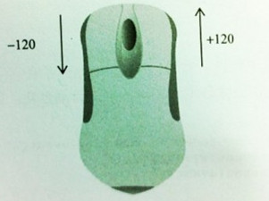

MouseScrollEvent.js
鼠标滚动事件应用举例:
示例1: 文本框增加/减少值
文本框获得焦点后滚动鼠标滚轮
示例2: 鼠标滚动缩放图片

示例3: 鼠标滚动控制滑块移动
鼠标滚动时的wheelDelta值:
mousewheel事件对象event包含一个叫wheelDelta的属性。当用户向前滚动时，wheelDelta的值是120的倍数，向后滚动时它的值是-120的倍数。如下图所示：

MouseScrollEvent对象提供四个方法:
1:addMouseScrollListener(element, callback) /*绑定鼠标滚动时事件*/ 2:removeMouseScrollListener(element, callback) /*取消事件绑定*/ 3:getEventObject(event) /*获取兼容的事件对象event*/ 4:getWheelDelta(event) /*获取滚动时whellDelta值*/
源码:
Download MouseScrollEvent.js
var MouseScrollEvent = (function(){
/*监听事件*/
function addMouseScrollListener(element, callback){
if(element.addEventListener){
element.addEventListener("DOMMouseScroll", callback, false);
element.addEventListener("mousewheel", callback, false);
}else if(element.attachEvent){
element.attachEvent("onmousewheel", callback);
}else{
element.onmousewheel = callback;
}
}
/*取消事件监听*/
function removeMouseScrollListener(element, callback){
if(element.removeEventListener){
element.removeEventListener("DOMMouseScroll", callback, false);
element.removeEventListener("mousewheel", callback, false);
}else if(element.detachEvent){
element.detachEvent("onmousewheel", callback);
}else{
element.onmousewheel = null;
}
}
/*获取事件对象event*/
function getEventObject(event){
event = event ? event : window.event;
if(event.detail && !event.wheelDelta){// firefox
event.wheelDelta = event.detail * -40;
}else if(!event.detail && event.wheelDelta){//webkit && IE
/*企图修改webkit浏览器event对象，但是不起作用，event.detail始终为0*/
event.detail = parseInt(event.wheelDelta / -40, 10);
}else{
/*
* opera中event对象同时支持detail和wheelDelta，为了编写跨浏览器代码.
* 推荐使用修正后的event对象的wheelDelta属性,向下滚动为-120的倍数，向上为正
*/
}
return event;
}
/*获取鼠标滚动wheelDelta值*/
function getWheelDelta(event){
return getEventObject(event).wheelDelta;
}
return {
addMouseScrollListener : addMouseScrollListener,
removeMouseScrollListener : removeMouseScrollListener,
getEventObject : getEventObject,
getWheelDelta : getWheelDelta
};
}).call(this);